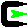

[hih-BAH-chee]
Japanese for "fire bowl", a hibachi is just that - a small (generally cast-iron) container made for holding fuel (usually charcoal). A grill that sits on top of the bowl is used to cook various foods. Hibachis come in square, oblong and round models. Because of their compact size, they're completely portable.
Description
HIBACHI is a simple, small, and secure web server with virtual host and CGI support. It is a limited implementation of RFC 2616 and the CGI/1.1 Specification. HIBACHI was written as an entry for the International Obfuscated C Code Contest and works for any Unix variant including the Cygwin environment for Windows.
HIBACHI supports dynamic web content through the use of the Common Gateway Interface (CGI) specification. Just about any scripting or programming language can be used, such as a POSIX shell, Perl, PHP, Python, and/or Ruby. Existing CGI scripts can be used with little or no modification. Hibachi executes all CGI scripts as though they were "nph" prefixed, which is to say that it is the script's responsibility to send the HTTP status line and necessary headers direct to the client.
Virtual host support is implemented as subdirectories of the HIBACHI document tree, where the directory name is the domain name publish in a URL. For example to setup a virtual host by name or IP for https://www.ioccc.org/, assuming the HIBACHI document tree is rooted at /usr/local/share/hibachi, then:
/usr/local/share/hibachi/ www.ioccc.org/ index.html ... 64.81.251.233 -> www.ioccc.org/
HIBACHI is ideal for special floppy-Linux distributions, like Leka, which can be used for rescue, firewall, demo, or dedicated servers. In theory, with some modifications, HIBACHI and a script interpreter, like PHP, could also be bundled with CDROMS that require a means of presenting dynamic web pages.
Features
- Supports virtual hosts.
- Supports all MIME types.
- Supports Common Gateway Interface (CGI) scripts and programs.
- Supports multiple index.* file types, ie. index.html, index.php, index.pl
- Supports subset of RFC 2616 HTTP/1.1 methods GET, HEAD, and POST.
- Simple & straight forward configuration using environment variables.
- Portability across Unix-like environments, ie. Cygwin, FreeBSD, Linux, SunOS.
- Known to work with Lynx, Mozilla, Opera, and Internet Explorer web browsers.
- Is a dedicated process-forking server that does not use inetd.
- Is secure against relative path file snooping.
- Is secure against directory searches.
- ~155 lines of source, 1940 bytes long by IOCCC 2004 rules, ~6KB compiled & stripped on FreeBSD.
- Superior & smaller than micro_httpd from ACME.
- And has a really cool animated logo too.
Installation
Download:
Hibachi-1.0 Obfuscated md5sum Change Log Hibachi-1.0 Spoiler md5sum Change Log -
Unpack and build the executable:
tar -zxf hibachi-1.0.tgz
cd hibachi-1.0
./configure
make
Usage
First read and configure the file hibachi-start.sh. In most cases the
defaults settings should be fine for testing. Start the server in
the background, and perform the initial test (assuming that SERVER_PORT was
not altered in hibachi-start.sh):
./hibachi-start.sh & lynx http://localhost:8008/
To stop the server:
kill %1
To access this documentation and examples from the Internet, create symbolic links for the host name and/or IP pointing to the «localhost» directory. For example, replace the IP and host name addresses below with that of the machine running HIBACHI:
ln -s localhost 64.81.251.233 ln -s localhost www.ioccc.org
HIBACHI can server multiple websites from the same machine simply by creating content directories with the same name as the URL domain names within the document root tree. Domain and/or IP aliases are simply symbolic links to content directories. There is never any need to restart HIBACHI when websites are published or aliases added. Assuming the server is running and that port 8008 is not blocked by any firewall, you should be able to access the server from the Internet using an IP or host name URL similar to:
https://185.199.111.153 https://www.ioccc.org:8008/
Port 8008 (http-alt) was chosen as the default port for demonstration purposes, since its an alternative HTTP port that does not require special privileges and is rarely in use. Of course, HIBACHI could be run as a standard web server on port 80, but this would require that it be installed by the system administrator, contrary to IOCCC rules.
CGI Examples
The following tests and examples are available to demonstrate various aspects of the CGI support:
- POSIX Shell Example
- These CGI scripts perform some basic tests on the handling of GET and POST requests, cookies, and the passing of environment variables to CGI scripts. These CGI scripts assume that /bin/sh is a POSIX compliant shell and the standard set of POSIX utilities are available. Should work for all Unix variants and Cygwin.
- Perl Example
- This example queries the Yahoo website for a stock quote to insert into a web page. This example requires a browser with JavaScript support and should work for all Unix variants and Cygwin, when Perl is installed.
- PHP Example
-
 This PHP example generates a calendar complete with ISO 8601:2000 week numbers.
This PHP example generates a calendar complete with ISO 8601:2000 week numbers.
The Windows PHP CGI binary distribution from the PHP website does not work within the Cygwin environment. Instead, download the source distribution and build the PHP CGI and CLI versions from scratch from within Cygwin. The following commands were used to build:
# Without this link, the configure script has problems with Cygwin. ln -s /bin/gcc /bin/cc CFLAGS=-O ./configure \ --with-config-file-path=/usr/local/etc:/etc \ --enable-discard-path \ --disable-xml \ --without-pear \ --enable-sockets \ --enable-bcmath \ --enable-ftp \ --enable-dba \ --with-inifile make make install # Install both the CGI and CLI (though the CLI is not used here). mv /usr/local/bin/php /usr/local/bin/php.cgi.exe make install-cli mv /usr/local/bin/php /usr/local/bin/php.exe cp php.ini-recommended /etc/php.ini
The php.ini file should specify "output_buffering = 4096" so that PHP scripts have a chance to modify the response status and headers before the body is sent. Also set "cgi.rfc2616_headers = 1". Click here to display the PHP Info configuration.
- Ruby Example
- This example validates and/or generates Luhn check-digits. Should work for all Unix variants and Cygwin, when Ruby is installed.
Portability

4.8 
Cobalt Qube 1, RedHat Linux 5.1, gcc 2.7.2 5.8  
Windows 2000 SP4, Windows XP Pro SP1
with Cygwin, gcc 2.95.3-5
License
In accordance with the International Obfuscated C Code Contest this is an original work and placed in the public domain.
Disclaimer
THIS SOFTWARE IS PROVIDE "AS IS" AND ANY EXPRESSED OR IMPLIED WARRANTIES, INCLUDING, BUT NOT LIMITED TO, THE IMPLIED WARRANTIES OF MERCHANTABILITY AND FITNESS FOR A PARTICULAR PURPOSE ARE DISCLAIMED. IN NO WAY SHALL THE AUTHOR OR LICENSEE BE LIABLE FOR ANY DIRECT, INDIRECT, INCIDENTAL, SPECIAL, EXEMPLARY, OR CONSEQUENTIAL DAMAGES (INCLUDING, BUT NOT LIMITED TO, PROCUREMENT OF SUBSTITUTE GOODS OR SERVICES; LOSS OF USE, DATA, OR PROFITS; OR BUSINESS INTERRUPTION) HOWEVER CAUSED AND ON ANY THEORY OF LIABILITY, WHETHER IN CONTRACT, STRICT LIABILITY, OR TORT (INCLUDING NEGLIGENCE OR OTHERWISE) ARISING IN ANY WAY OUT OF THE USE OF THIS SOFTWARE, EVEN IF ADVISED OF THE POSSIBILITY OF SUCH DAMAGE.
Support
Free support is limited, based on the author's availability, though enhancements requests and problem reports are welcome (see logo above).